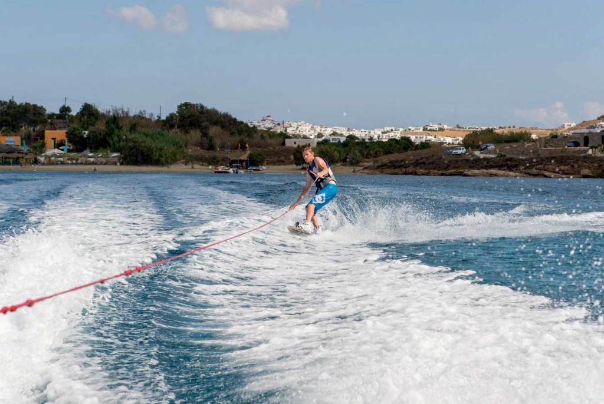
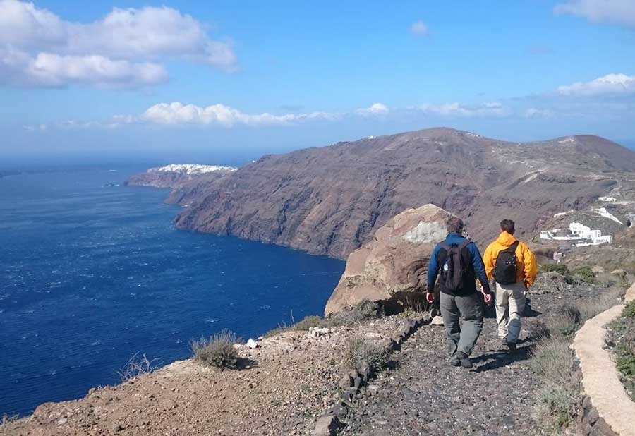
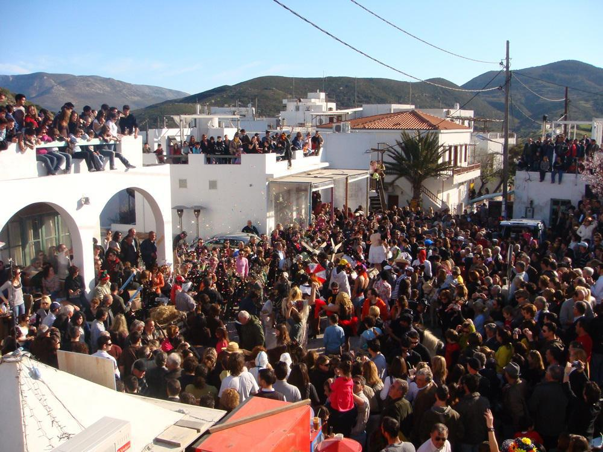
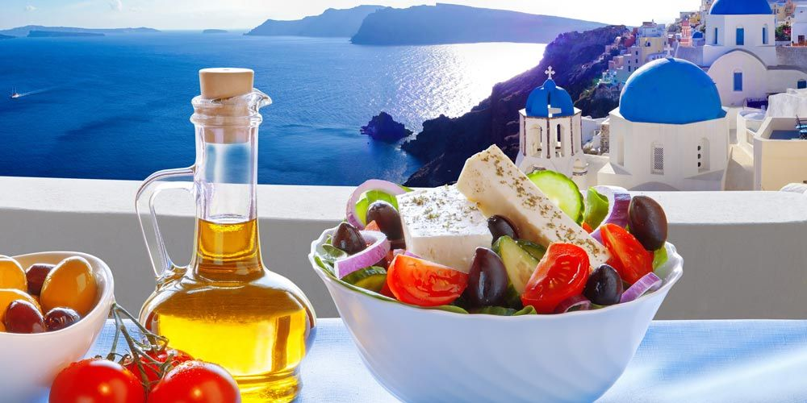
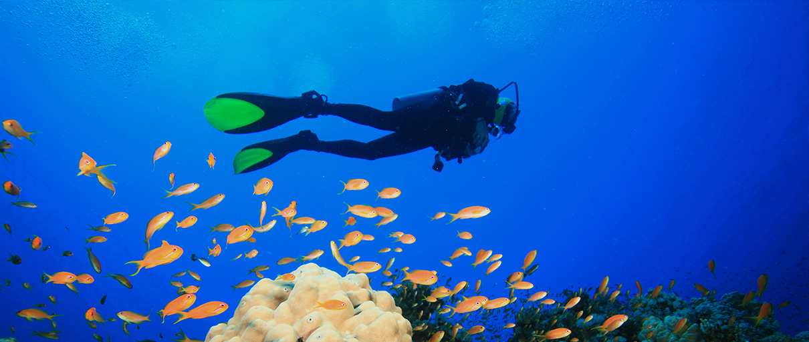
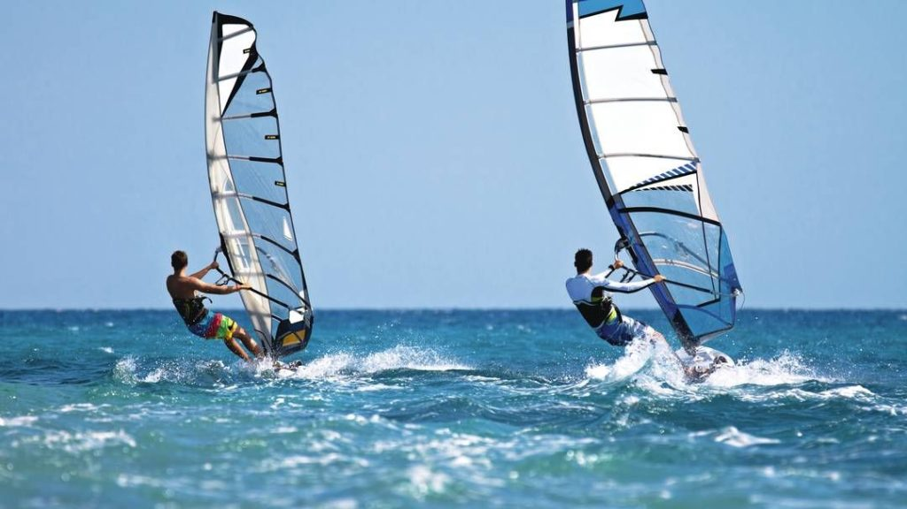
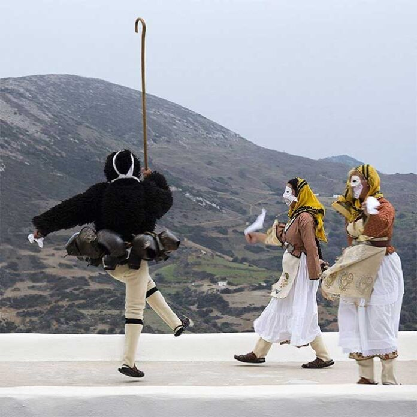

Απολαύστε ιστιοπλοΐα, καταδύσεις, πεζοπορίες και παραδοσιακές εμπειρίες!
Τα Ελληνικά νησιά συνδυάζουν μοναδικά την απέραντη γαλάζια θάλασσα με χρυσαφένιες ακτές, πλούσια ιστορία και παραδοσιακή φιλοξενία που καθηλώνει τον επισκέπτη. Κάθε νησί αποτελεί κι ένα μικρό «θησαυροφυλάκιο» από γραφικά χωριά, αρχαιολογικούς θησαυρούς και γαστρονομικές απολαύσεις, έτοιμα να αποκαλύψουν τα μυστικά τους.

Ιστιοπλοΐα, καταδύσεις, θαλάσσιο καγιάκ και jet ski σε καταγάλανες παραλίες.

Πεζοπορίες σε φαράγγια, ποδηλασία σε ορεινές διαδρομές, εξερεύνηση σπηλαίων.

Τοπικά φεστιβάλ, παραδοσιακά πανηγύρια, επισκέψεις σε μουσεία και αρχαιολογικούς χώρους.

Τοπικά πιάτα, μαγειρικά εργαστήρια και γευσιγνωσία κρασιών και ελαιολάδου.
Εξερευνήστε τα κρυστάλλινα νερά του Αιγαίου πάνω σε ιστιοπλοϊκό, με ανεμπόδιστη θέα σε ξεχασμένες παραλίες και μυστικά καταφύγια. Ιδανικό για ρομαντικές εξορμήσεις ή παρέες που αναζητούν ελευθερία και αδρεναλίνη.

Βουτήξτε σε υδάτινα τοπία γεμάτα χρώμα και ζωή: πολύχρωμα κοράλλια, ναυάγια και άγρια θαλάσσια πανίδα σας περιμένουν. Ανεξάρτητα αν είστε πρωτάρηδες ή προχωρημένοι, οι ελληνικές θάλασσες εντυπωσιάζουν.
Περάστε μονοπάτια με θέα σε απόκρημνα τοπία, καταπράσινα φαράγγια και παραδοσιακά χωριά. Από το Φαράγγι της Σαμαριάς στην Κρήτη μέχρι τους μονοπάτια των Σποράδων, κάθε βήμα αξίζει.

Απολαύστε τα δυνατά μελτέμια στις ακτές της Μυκόνου ή της Πάρου. Το windsurf και το kite-surfing εδώ είναι από τα κορυφαία στην Ευρώπη – τα κύματα, ο άνεμος και η θάλασσα συνδυάζονται μοναδικά.

Ζήστε την καρδιά της νησιωτικής ζωής: σεμινάρια μαγειρικής με τοπικά προϊόντα, γλέντια κάτω από τα φεγγάρια, οινογευσίες τοπικών κρασιών και μαστίχας – μια αυθεντική γεύση Ελλάδας.